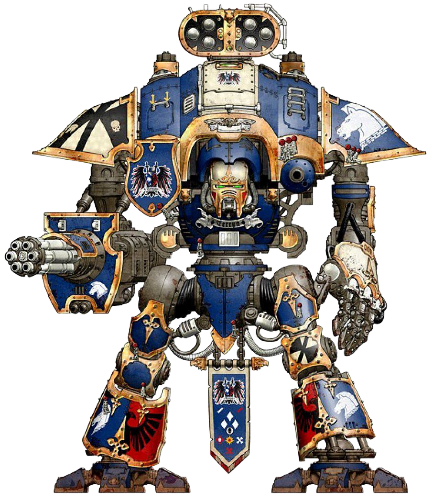

IMPERIAL KNIGHTS
Faction Mission:
Our oaths are eternal.
Second Round (Action) - at No Man's Land '6' from Objective drop additional Objective Marker.
Conditions:
* If you held Objective until the end of the round.
* Your OC more then OC opponent on this Objective.
* Success - 1 point of oath.
Restriction:
* No Man's Land.
* Remove this Objective at the end of Battle Round.
Rewards:
If you earned:
* 2 points of oaths: Command Phase choose one Unit, this unit eligible perferm Shooting and Action.
* 3 points of oaths: Warlord - when you gain VP add 2 VP for each one.
